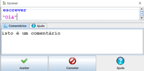
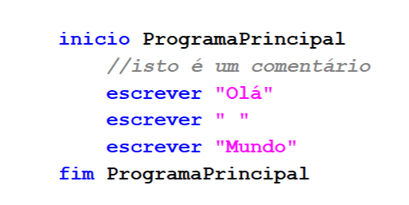
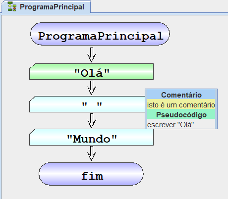

Há duas maneiras de inserir um comentário no programa uma delas é selecionar uma instrução dentro do fluxograma e por baixo estará a secção dos comentários.

A segunda maneira é ir ao código e selecionar pseudocódigo que já está por defeito e editar programa, para adiconar o comentario tem de ser antes da instrução que pretende adicionar o e tem de começar com "//", como o exemplo a abaixo.

Para visualizar o comentário no pseudocódigo basta colocar o cursor em cima da instrução e visualizará como o exemplo a abaixo.
